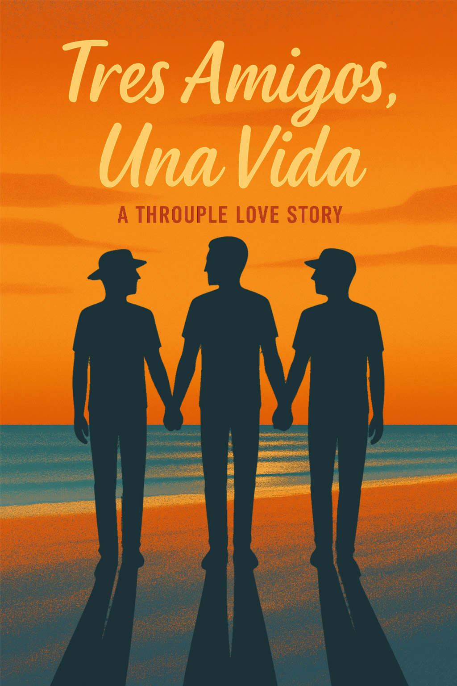
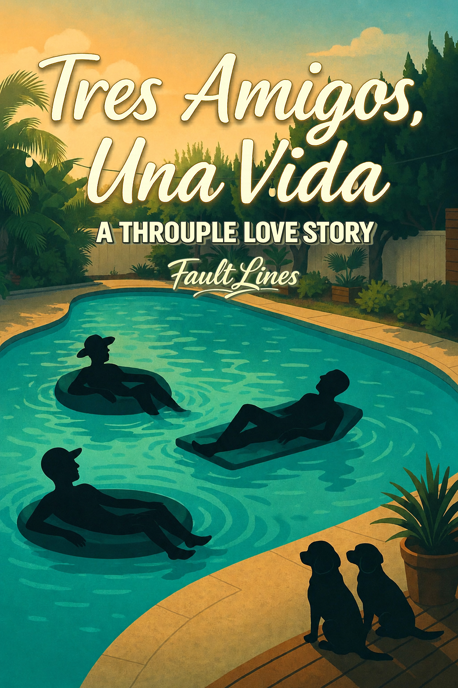
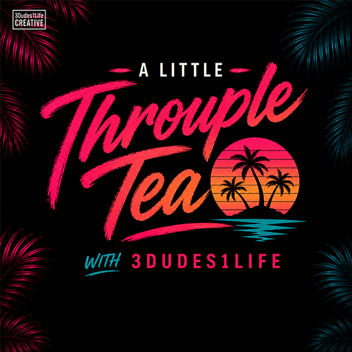
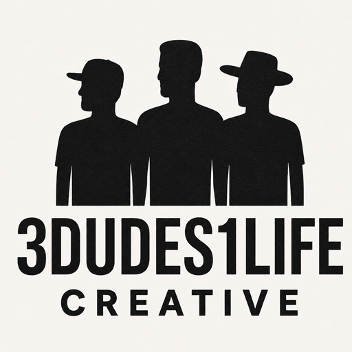

Book One
Tres Amigos, Una Vida
Michael, Juan and Christopher discover that building a life together asks for more than chemistry. It demands honesty, trust and the courage to define love for themselves.
Explore the series ↗William’s newest chapter turns real life into stories—through a growing book series, an unfiltered weekly podcast and the creative world built by 3Dudes1Life.


A contemporary throuple love story about vulnerability, devotion, conflict, healing and the beautifully complicated work of choosing one another.
Michael, Juan and Christopher discover that building a life together asks for more than chemistry. It demands honesty, trust and the courage to define love for themselves.
Explore the series ↗The story expands as old wounds, outside pressure and the realities of commitment test the life the three men have fought to build together.
Continue the story ↗
William, Caleb and Daniel bring their real relationship to the microphone—talking love, chaos, money, family, queer culture and what life actually looks like inside a committed three-person partnership.

The creative studio connecting the podcast, books, social content and the evolving public story of William, Caleb and Daniel. Different formats. One shared life.
Explore 3Dudes1Life ↗The novels explore emotional truths through characters and a world readers can live inside.
The weekly show brings the actual personalities, humor and lived experience behind the creative work.
3Dudes1Life gives every format a shared home while allowing each project to build its own audience.
“Some stories are written. Some are recorded. The best ones become part of how people see their own lives.”